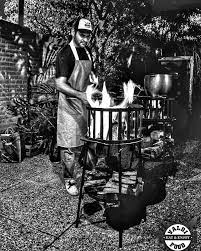
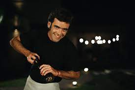
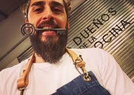

valdi food
personal de valdi food
nuestro equipo esta formado por
| nombre | apellido | edad |
| diego | valdivieso | 28 |
Diego es ceo y creador del catering. Le gusta estar en todos los detalles pero en los eventos lo veras la mayor parte del teimpo en la cocina. No se considera chef, si no un cocinero de alma.
| nombre | apellido | edad |
| julian | barrero | 34 |
julian es una pieza clave en nuestros eventos. Se considera el artesano de las estacas, cuando se habla de costillares o vacíos a la cruz, es el indicado para que todo salga perfecto.
| nombre | apellido | edad |
| lucas | escobar | 32 |
lucas, o mejor conocido como Tony. Meticuloso e inquieto se encarga de crear excelentes combinaciones de sabores tanto en el marinado de carnes, como en acompañamientos, hummus, salsas y demás. Siempre aporta el toque gourmet a nuestros menús.
